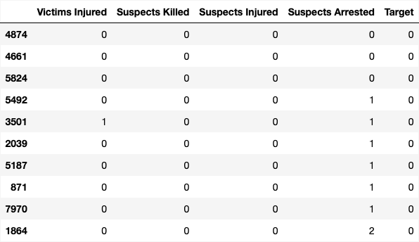
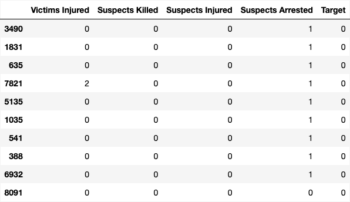
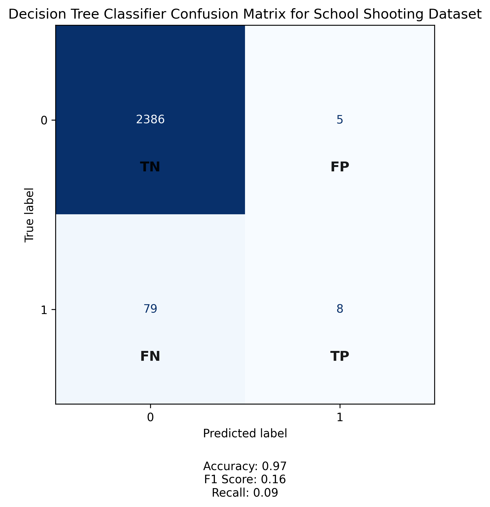
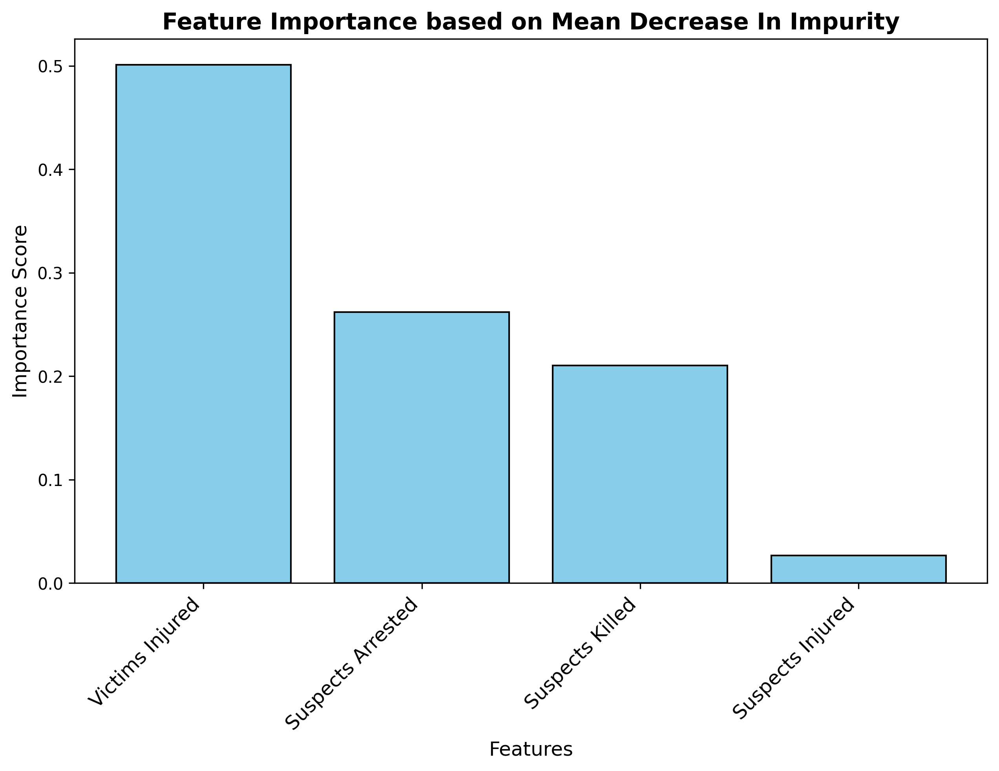
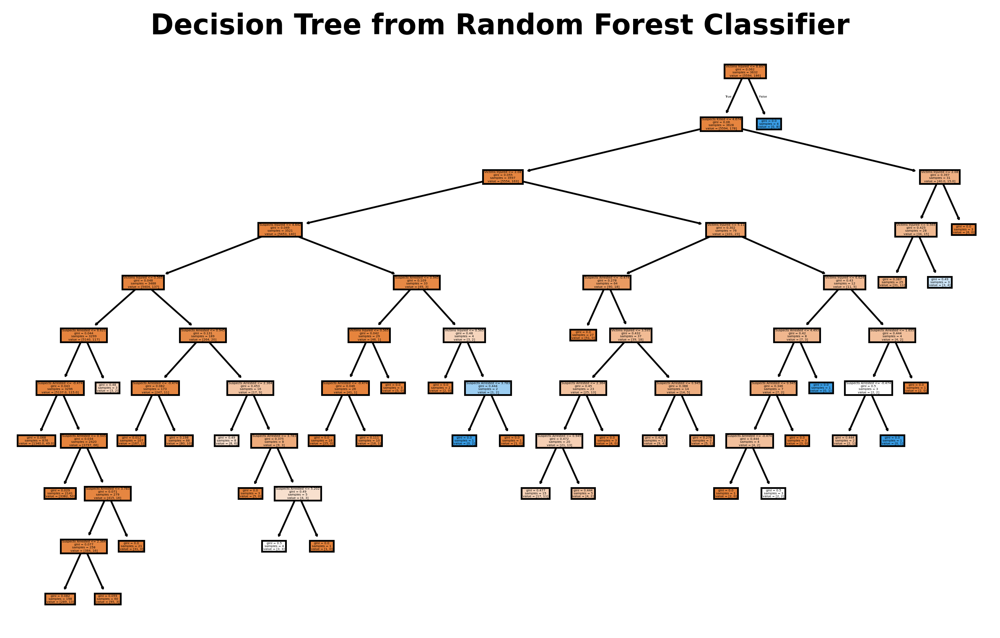
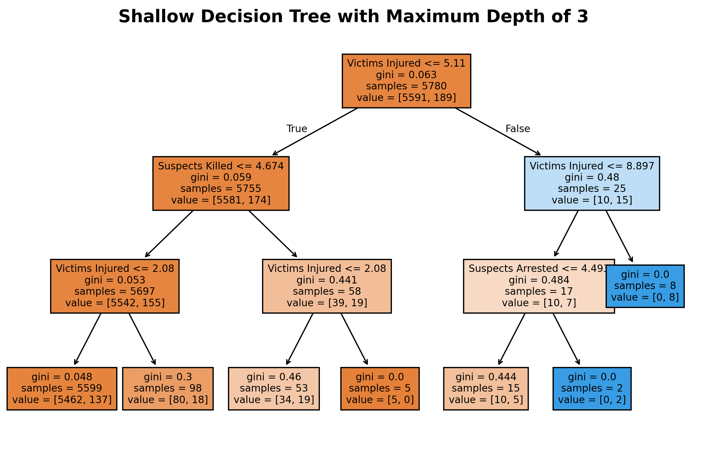
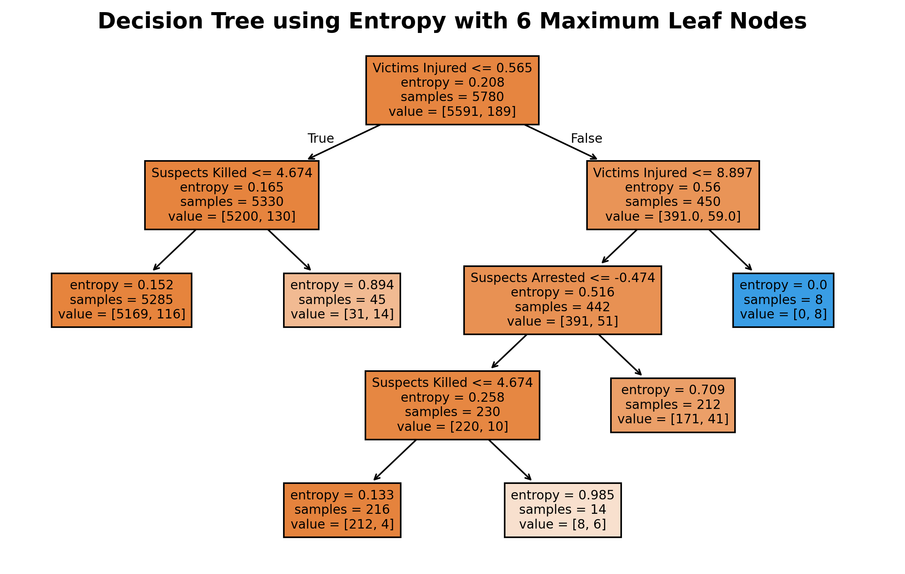
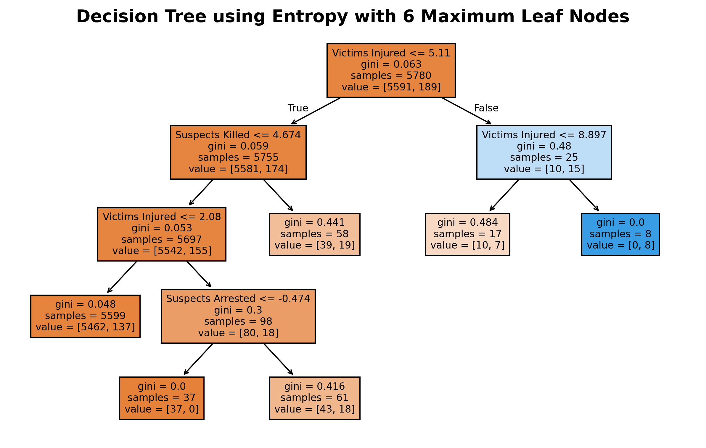

School Shootings

Training Data
Testing Data
Confusion Matrix
Feature Importance
Decision Tree using Random Forest
Shallow Decision Tree
Decision Tree using Entropy
Decision Tree using Gini
Conclusions
From the additional decision tree visualizations and the feature importance chart, it becomes even clearer that “Victims Injured” is the most dominant predictor in classifying the severity of school shooting incidents. This feature consistently appears at the root of the trees and holds the highest importance score in the bar chart, reinforcing its central role in the model's decision-making process.
The trees also show that when the number of victims injured is low, the model confidently predicts less severe outcomes, often with very low impurity values. Conversely, higher injury counts lead to more complex branches involving features like “Suspects Killed” and “Suspects Arrested,” which help refine predictions about fatality likelihood. These secondary features contribute meaningfully but are less influential than victim injury levels.
The confusion matrix reveals that while the model achieves high overall accuracy (97%), it struggles to correctly identify positive cases (fatal incidents), as shown by the low recall (0.09) and F1 score (0.16). This suggests that the model is better at recognizing non-fatal events than fatal ones, likely due to class imbalance in the dataset.
Overall, these insights highlight that injury counts are the strongest signal for predicting incident severity, and that improving the model's sensitivity to fatal cases may require addressing data imbalance or incorporating additional contextual features.